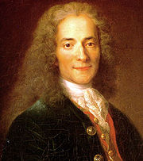

Voltaire (1694-1778)
Có sách chép rằng bà Nhan thị trước khi sanh ra Khổng tử, nằm mộng thấy một con kỳ lân nhả tờ ngọc thư có hàng chữ: “Thuỷ tinh chi tử, kế suy Chu vi tố vương”, nghĩa là “con của Thuỷ tinh, nối nhà
Một triết gia khác ở phương Tây may mắn hơn ông nhiều, ngay khi còn sống đã được dân chúng châu Âu tặng cái mỹ hiệu là ông vua không ngôi, “vua Voltaire”, rồi sau khi chết lại được phương Tây dùng tên mình để chỉ một thế kỷ, “thế kỷ Voltaire”, tức thế kỷ XVIII. Chính Victor Hugo già nửa đời chỉ mong tên mình được dùng để thay tên
°
° °
Muốn hiểu đời ông vua không ngôi đó, ta nên biết qua tinh thần của thế kỷ XVIII.
Nhiều sử gia gọi thế kỷ đó là thế kỷ cuối cùng của chế độ quân chủ ở châu Âu. Nhận xét đó rất đúng. Sau cuộc cách mạng 1789 ở Pháp, qua thế kỷ XIX, ở châu Âu và ngay ở Pháp cũng còn ít nhiều ông vua nhưng chế độ quân chủ đã khác, không như chế độ từ Louis XIV trở về trước. Ông vua nào độc tài như Nã Phá Luân thì cầm quyền không bền, mà dù độc tài cũng không dám coi thường dân chúng nữa, còn những ông khác thì quyền hành không có bao nhiêu. Sự thay đổi lớn lao đó nảy mầm từ thế kỷ XVIII. Dưới thời Louis XIV, dân chúng vẫn trọng vua nhưng đã ngờ rằng nhiều ông vua bất lực, không đủ tài cán để hiểu tình thế, không đủ sáng suốt để trị dân. Mới đầu người ta nghi ngờ rồi sau người ta chỉ trích.
Hạng quý phái thì mỗi ngày một sa đoạ. Họ đầu cơ, phung phí, cờ bạc, rượu chè, trai gái. Cái tội dâm loạn mà phương Đông chúng ta thời đó cho là ghê tởm, thì họ, các ông Công, ông Hầu, bà Bá, bà Nam của phương Tây cho là một cái “mốt”, một “mốt quý phái”. Chung tình với vợ, với chồng ư? Phì! Đồ lạc hậu, quê mùa! Phải nay đi với bà này, mai đi với bà khác mới là thiệp thế. Tới một số luân lý gia cũng bị lôi cuốn theo trào lưu. Họ vẫn dạy luân lý, nhưng một thứ luân lý mới dựng trên cái thuyết, cái đạo hưởng lạc. Họ rán chứng minh được rằng bổn phận, cả tới lòng thờ Chúa nữa cũng có thể đi đôi với đạo hưởng lạc được. Lạc thú vẫn có nhiều thứ tao nhã, có thứ còn cao cả nữa, nhưng bạn tưởng tượng khi bọn trí thức đề xướng thuyết hưởng lạc trong xã hội như vậy thì ảnh hưởng phải ra sao.
Tinh thần tôn giáo cũng xuống. Người ta đã bắt đầu hoài nghi. Người ta chưa hoài nghi Chúa. Descartes ở thế kỷ trước tuy phản đối triết lý kinh viện và đề cao tinh thần lý luận, phán đoán, song vẫn tin Chúa, chứng minh rằng có Chúa. Nhưng tinh thần hoài nghi, lý luận của Descartes cũng có hại cho tôn giáo, cho nên qua đầu thế kỷ XVIII, một đệ tử của ông, Tyssot de Patot, năm 1727 đã viết: “Đã bao lâu nay tôi dạo chơi trên những con đường thênh thang và sáng sủa của môn Hình học, thành thử tôi cực khổ mới chịu được những con đường mòn chật hẹp tối tăm của tôn giáo”.
Số người như Tyssot de Patot còn ít, nhưng số người nghi ngờ hành vi luật lệ của giáo hội thì nhiều, nhất là khi người ta thấy những giáo phái cùng thờ một Chúa mà bài bác lẫn nhau, tấn công lẫn nhau.
Trong khi đó, một tinh thần mới đã xuất hiện rồi phát triển mạnh, tinh thần triết lý. Mới đầu chỉ là óc tò mò, cái gì cũng muốn biết, muốn học, chưa bao giờ người ta ham học như thời đó. Từ vua chúa tới thường dân, cả tới các bà lớn, các tiểu thư đều đua nhau học hỏi. Trong nửa đầu thế kỷ, riêng nước Pháp đã thành lập hai chục Hàn lâm viện để khảo cứu. Báo chí đua nhau ra, mới đầu là tạp chí dành cho các nhà bác học, sau tới những báo chí để phổ thông khoa học trong quần chúng. Phòng các bà Công, bà Hầu biến thành những phòng thí nghiệm, chứa đủ các mẫu cây, cỏ, đá, loài vật và các dụng cụ để thí nghiệm. Chính vua Louis XIV cũng có nhiều phòng thí nghiệm. Nhà vật lý học Nollet giảng ở trường trung học De Navarre, có tới 600 người tới nghe, các bà hoàng, bà chúa chen chúc nhau lại coi và yêu cầu Nollet cho điện giật chơi. Bà Roland, con một người thợ khắc, cũng học toán, vật lý, hoá, thiên văn. Hoàng tử Pháp học về thảo mộc. Diderot, J.J.Rousseau,
Đó là những nét đại cương của tinh thần thế kỷ XVIII. Trong thời đại như vậy, một nhà văn như Voltaire, có tài bút chiến, có cây viết sắc bén, cay độc, lại dám can đảm hy sinh cho lý tưởng, tất lập nên sự nghiệp lớn.
°
° °
Voltaire sanh trước thế kỷ đó sáu năm (1694) và sống trên bốn phần năm thế kỷ. Ông mất năm 1778 thì mười một năm sau Cách mạng ở Pháp nổ.
Tên ông là François Marie Arouet, sau mới đổi ra Voltaire, có người bảo tên Voltaire là do lối đảo những mẫu tự Arouet L(e) J(eune)[1] mà ra, nhưng điều đó chưa chắc, vì bên ngoại của ông, mấy đời trước, đã có một người tên Voltaire.
Thân phụ ông là một viên công chức phong lưu, thân mẫu ông dòng dõi cũng hơi quý tộc. Có lẽ ông đã chịu di truyền cả óc tinh tế và tính hay quạu của cha lẫn tính phù phiếm, hơi bỡn cợt mỉa mai của mẹ. Ông mới sanh thì mồ côi mẹ, ông lại yếu ớt đến nỗi người vú nuôi ngại ông chỉ sống được 24 giờ. Thực là bé cái nhầm! Ông đã sống 84 tuổi, nhưng suốt đời phải chiến đấu với bệnh tật và sở dĩ ông thọ được là nhờ tinh thần ông mạnh mẽ phi thường.
Ngay từ hồi mới biết viết, François đã tập tễnh làm thơ; cha cậu thất vọng, cho cậu là vô dụng. Cậu theo học một tu viện trưởng vô hạnh, rồi thụ giáo các thầy dòng Tên. Các ông này dạy cho cậu thuật biện luận – nói cho đúng là thuật nguỵ biện, mồm mép - mà tinh thần biện luận đó là tinh thần nghi ngờ hết thảy, không tin một cái gì cả.
Trong khi các bạn chơi giỡn ngoài đồng thì cậu bàn cãi về thần học với các giáo sư. Ai cũng nhận cậu là thông minh lanh lợi.
Ở trường trung học ra, cậu xin phép cha được sống về nghề cầm bút. Ông cụ đập bàn la: “Nghề viết văn là nghề của những kẻ vô ích cho xã hội. Sống bám vào vợ để chờ ngày chết đói”. Cha la thì la, ý cậu, cậu vẫn giữ.
Cái nghề đó sướng quá mà! Không có gì bó buộc, không phải tới sở, tới hãng, muốn ngủ lúc nào thì ngủ, thức lúc nào thì thức, mà khi người ta mới hai mươi tuổi thì ai chẳng ham vui, cho nên cậu lấy đêm làm ngày, không phải để khảo cứu, viết lách gì đâu, mà để “bốc đồng” với một bọn phóng đãng, đến nỗi nhà cầm quyền phải để ý tới cậu. Ông cụ phải tống cậu về Caen ở với một người trong họ và dặn người này coi chừng “thằng quỉ” đó, đừng cho ra khỏi nhà. Nhưng “thằng quỉ” đó mồm mép vào bậc nhất, không biết thuyết cách nào mà người bà con phải mê, không câu thúc cậu nữa. Cụ ông tức giận, lần này đày cậu qua La Haye, nhờ viên sứ thần Pháp ở Hoà Lan cầm chân giùm. Bị cầm chân cách nào không biết mà ngày nào cậu cũng lén đi thăm một thiếu phụ xinh đẹp, nàng “Pimpette”[2]. Cậu gởi cho nàng những bức thư nồng nàn, bức nào cũng chấm dứt bằng câu: “Anh yêu em mãi mãi”. Thế là viên sứ thần phải trả cậu về
Năm đó là năm 1715, vua Louis XIV mới băng, vua Louis XV kế vị; vì Louis XV còn nhỏ tuổi, quyền hành ở trong tay một viên phụ chánh. Viên này muốn tiết kiệm, đem bán một nửa số ngựa trong các chuồng ngựa hoàng gia. Cậu François lúc đó 21 tuổi, đang ở trong cái thời ngông nghênh, hay tin đó, mỉm cười phê bình: “Giá đuổi cổ một nửa bầy lừa nó làm chật triều đình đi thì hay hơn”. Cậu nổi danh về hàng chục câu hóm hỉnh, mỉa mai cay độc như câu đó. Cậu làm hai bài thơ để đả kích viên phụ chánh, ông này hay được, một hôm gặp cậu bảo: “Cậu Arouet, tôi cam đoan với cậu rằng tôi có thể cho cậu coi một cái mà chưa bao giờ thấy” – “Cái gì vậy, thưa ngài?” – “Cái bề trong của ngục thất Bastille”. Ngay hôm sau cậu vô khám.
Ở trong khám cậu chọn tên hiệu là Voltaire, và để tiêu sầu, cậu làm thơ, viết kịch, soạn được tập La Henriade – một tập anh hùng ca khá dài kể đời Henri de Navrre, viết nốt kịch Œdipe mà cốt truyện mượn trong thoại kịch Hi Lạp. Được một năm, viên phụ chánh thấy chàng thanh niên đó chỉ ngông nghênh chứ vô hại mà lại có tài nên tha tội và cho một số tiền cấp dưỡng hàng năm. Vẫn không chừa cái tật hóm hỉnh, cậu viết thư cảm ơn ông đã giúp cho mình sự ăn uống, còn chỗ ở thì xin phép được tự lo lấy!
Œdipe giá trị quá tầm thường, tâm lý không sâu sắc mà được diễn liên tiếp bốn mươi đêm ở
Chàng nhận được 4.000 quan về tiền tác giả. Vốn có óc kinh doanh thực tế hiếm thấy trong văn nhân, chàng dùng hết cả số tiền để đầu cơ trong một cuộc sổ số và lời một số tiền quá lớn đến nỗi chính phủ cũng phải ghen. Nhưng chàng cũng có tính hào phóng, càng giàu lại càng giúp đỡ người nghèo, che chở kẻ yếu.
Tập anh hùng ca La Henriade làm cho danh chàng vang thêm chút nữa. Chàng được các gia đình quý phái tiếp đón niềm nở, ai cũng thích nghe những lời hóm hỉnh, hùng hồn của chàng. Nhưng một hôm chàng bị một ông quý phái làm nhục trong một cuộc hội họp sang trọng. Chàng đương thao thao bất tuyệt thì ông quý phái đó lớn tiếng: “Thanh niên nào mà vô lễ la lối như vậy hả?”. Chàng đâu có nhịn: “Thưa ngài, thằng thanh niên đó là một kẻ không mang tên quý tộc nào cả, nhưng nó trọng cái tên nó mang”. Ông quý phái kia bà con với ông Thượng thư bộ Công an, và ít bữa sau Voltaire vô ngục một lần nữa. Người ta giam chàng vài ngày rồi thả, nhưng buộc chàng phải qua bên Anh. Lần đi đày này (1726-1729) ảnh hưởng lớn đến đời chàng.
°
° °
Ở Luân Đôn, Voltaire cặm cụi học tiếng Anh, đọc hết các tác giả Anh đương thời và làm quen với nhiều nhà trí thức. Ông ngạc nhiên nhận thấy rằng dân tộc Anh được hưởng nhiều tự do hơn dân tộc Pháp. Các văn sĩ của họ muốn viết gì thì viết, dân chúng có quyền phát biểu ý kiến, đã cải lương tôn giáo, lại treo cổ được một ông vua. Ông hết lời khen:
“Dân tộc Anh là dân tộc độc nhất trên thế giới đã quy định được quyền của vua và sau nhiều lần gắng sức đã lập được một chính thể minh trí, nó cho nhà vua đủ quyền để làm điều thiện mà phải bó tay khi muốn làm một điều ác”.
Nhất là các nhà bác học của họ làm việc rất hăng hái, phát minh được nhiều điều lạ. Ông được dịp đưa đám ma
Ông ghi vắn tắt cảm tưởng trong tập “Những bức thư về dân tộc Anh”[3] rồi truyền tay bản thảo cho bạn bè chứ không xuất bản, vì chính phủ Pháp đương ghét chính phủ Anh mà trong tập đó ông ca tụng người Anh quá, so sánh chế độ áp bức của Pháp với chế độ tự do của Anh, so sánh hạng quý phái Pháp sa đoạ, biếng nhác với hạng quý phái có tinh thần khoáng đạt của Anh. Chính những bức thư đó đã đánh dấu một bước tiến trong tư tưởng của ông: ông không muốn dùng ngọn bút phù phiếm để bỡn cợt, làm vui thiên hạ nữa, mài cho nó bén để chiến đấu cho xứ sở, cho nhân loại.
°
° °
Năm 1729 ông được ân xá về
Cặp tình nhân đó dắt nhau về ở một lâu đài của bà Du Châtelet tại Cirey (miền Lorraine) trong mười năm[5], từ 1733 đến 1743. Họ lập một phòng thí nghiệm, ganh đua nhau nghiên cứu khoa học. Khách khứa tới rất đông. Buổi tối người ta diễn kịch hoặc bình văn. Ai cũng thích nghe tài kể truyện của Voltaire: “Cười và làm cho người khác cười”, đó là châm ngôn của ông. Chính trong thời đó ông viết những truyện nổi danh như Zadig, Micromégas…
Truyện có giá trị nhất là Zadig. Tác phẩm đó không phải là tiểu thuyết mà là một truyện triết lý.
Zadig là một hiền triết học rộng nhưng gặp toàn những bước rủi, đi khắp nơi, từ Ba Bi Lôn tới Ai Cập, trải đủ các nghề, có hồi được phong làm tể tướng trong một triều đình, được hoàng hậu yêu dấu, nhưng rồi phải trốn đi, sợ cơn ghen của nhà vua; có hồi làm nô lệ cho một con buôn Ả Rập; sau cùng được lên ngôi báu. Voltaire tưởng tượng nhiều tình tiết ngộ nghĩnh, cho dồn dập xảy ra từ đầu truyện tới cuối truyện, thỉnh thoảng chêm những câu triết lý hóm hỉnh, chủ ý chứng thực rằng trong xã hội chỉ có mỗi luật chi phối hết cả, là luật may rủi, mà tất cả những lố lăng, điên khùng, những đau khổ bi thảm của loài người đều có ích cho sự điều hoà vũ trụ do Thượng Đế tạo ra.
Dưới đây tôi xin giới thiệu một đoạn thường trích dẫn trong các sách giảng văn của Pháp dưới nhan đề là Lối hẻm cám dỗ. Một ông vua nọ bị các quan giữ kho đua nhau ăn cắp mà không tìm được cách trị, vấn kế Zadig. Zadig bảo không có gì khó cả, chỉ bắt những người xin chức giữ kho phải khiêu vũ, người nào khiêu vũ nhẹ nhàng là liêm khiết nhất. Rồi:
“Ngày hôm nay, ông ta (tức Zadig) sai yết thị rằng theo lệnh nhà vua, ai muốn sung vào chức chưởng khố đại thần trong triều Đại vương Nabussan, kế vị cho Đại vương Nussanab, thì ngày sóc tháng cá sấu phải bận quần áo bằng hàng nhẹ tới chực ở tiền sảnh trong hoàng cung. Có tới sáu mươi bốn người tất cả. Người ta đã gọi bọn nhạc công tới một phòng bên cạnh rồi sửa soạn cho cuộc khiêu vũ; nhưng cửa phòng đó khép và muốn vô thì phải đi theo một lối hẻm tối tăm. Một tên thị vệ dắt từng thí viên qua lối hẻm đó, xong người này mới tới người khác, và để cho mỗi người ở một mình trong lối hẻm độ vài phút. Nhà vua đã biết trước mưu mô rồi, cho bày hết cả vàng bạc châu báu trong lối hẻm. Khi họ vô đủ mặt trong phòng, nhà vua ra lệnh cho họ khiêu vũ. Không lần nào người ta khiêu vũ nặng nề và vụng về như lần đó: kẻ nào đầu cũng cúi xuống, lưng cũng gập lại, hai tay ôm lấy sườn. Zadig mừng thầm: “Quân ăn cắp!”. Chỉ có một người tiến lui nhẹ nhàng, đầu ngửng, mắt ngó ngay, tay duỗi, mình thẳng, chân cứng. Zadig nói: “À! Người này thật chân chính đáng khen”. Nhà vua niềm nở ôm người đó, phong chức chưởng khố, còn hết thảy những kẻ kia đều bị trừng trị và phạt vạ một cách công bình nhất đời, vì bọn họ khi ở trong lối hẻm đã thồn châu báu vào đầy túi đến nỗi đi không muốn nổi nữa. Nhà vua thấy trong số sáu mươi bốn người có tới sáu mươi ba quân ăn cắp mà giận cho tính tình con người. Từ đó lối hẻm tối tăm đó được gọi là “Lối hẻm cám dỗ”.
Trong thời gian ở Cirey, Voltaire sáng tác rất mạnh: ngoài những truyện kể trên, ông còn thu thập tài liệu để viết sử. Năm 1731, ông đã hoàn thành bộ Truyện Charles XII vua Thuỵ Điển, lúc này ông đã kê cứu để soạn bộ Cảo luận về phong tục và tinh thần các dân tộc, nhất là bộ Thế kỷ Louis XIV. Quan niệm về sử học của ông cũng hơi mới mẻ. Ông bảo: “Sử không phải là một bảng chép những tội ác cùng những đau khổ” và ông có ý muốn môn sử học cao cả hơn, bổ ích hơn bằng cách rán tim trong những biến cố tựa như vô nghĩa, cái tinh thần của nhân loại. Rồi ông kết luận: “Chỉ những triết gia mới được viết sử”, vì theo ông, khi viết sử, phải bỏ những tiểu tiết để có thể nhìn bao quát hơn, mà chỉ những triết gia mới có đủ sáng suốt nhìn bao quát được một thời đại.
Nhưng như vậy không phải ông có định kiến rồi chỉ dùng những tài liệu nào hợp với định kiến đó mà gạt bỏ tất cả những tài liệu khác. Trái lại, ông trọng tinh thần khoa học, cho nên tốn công phê phán kỹ lưỡng các tài liệu, chắc có đúng rồi mới dùng.
Nhờ tinh thần khoa học và triết học đó mà ông được hậu thế khen là người sáng lập ra môn sử hiện đại. Trong những bộ sử của ông, ông không chú trọng một cách quá đáng tới đời các vua chúa, ông bỏ qua những nhà cầm quyền tầm thường mà chỉ chép hành động của những vị có ảnh hưởng lớn đến nhân loại, quốc gia về phong tục, lối sinh hoạt văn hóa. Ông Will Durant trong cuốn The Story of philosophy (triết học sử) – cuốn mà tôi dùng nhiều nhất để soạn bài này – phê bình Voltaire: “Chính vì rút phần sử về các vua xuống mà sử gia Voltaire đã mở đường cho cách mạng: bộ Cảo luận về phong tục và tinh thần các dân tộc báo trước sự sụp đổ của dòng Bourbon”; lời đó rất đúng.
°
° °
Cũng trong thời ở Cirey, ông thường thư từ với hoàng tử nước Phổ. Hoàng tử ngưỡng mộ ông, khen ông là “vĩ nhân bực nhất của Pháp”, mà ta nên nhớ thời đó nước Pháp được coi là nước văn minh nhất châu Âu – tất cả các nhà trí thức châu Âu đều nói tiếng Pháp như nói tiếng mẹ đẻ của họ, mà phần nhiều các nhà bác học châu Âu đều soạn sách bằng tiếng Pháp – vậy “vĩ nhân bực nhất của Pháp” cũng có nghĩa là vĩ nhân bực nhất châu Âu. Hoàng tử lại còn khoe “Tôi cho rằng một cái vinh dự lớn nhất trong thời tôi là được sanh làm người đồng thời với Voltarie”. Hai bên thư từ với nhau rất nhiều và Voltaire hy vọng rằng khi hoàng tử lên ngôi thì sẽ thành một ông vua hiền triết, sẽ mở một kỷ nguyên mới, kỷ nguyên “ánh sáng” mà mình thì được đóng cái vai vừa là thầy học vừa là cố vấn tối cao của một minh quân. Ông sung sướng biết bao khi hoàng tử gởi cho ông một bài thơ chê cái thói bợ đỡ của bọn nịnh thần và một bài phản đối Michiavali[6] để hùng hồn mạt sát thói hay gây chiến tranh của các nhà cầm quyền. Nhưng chỉ vài tháng sau, khi hoàng tử lên ngôi, tức vua Frédéric[7], thì nhà vua “hiền triết” đó xua quân chiếm xứ Silésie làm cho khắp châu Âu đổ máu suốt một thế hệ.
°
° °
Ở Cirey lâu quá cũng chán, Voltaire lại về Paris – tất nhiên có phu nhân Du Châtelet đi theo – lại sống đời sống phù phiếm. Ông muốn ứng cử vào Hàn lâm viện, nên chịu khó chiều đời, tỏ ra rất ngoan đạo, nịnh nọt các nhà quyền thế, có khi nói dối một cách trân tráo, y như những kẻ tầm thường nhất. Mới hay các bực vĩ nhân cũng rất có thể bị dấu son đỏ choét nó mê hoặc; chứ cái danh Ông Hàn so sao được với cái danh đệ nhất văn hào châu Âu! Nhờ bà Pompadour, một thiên quốc sắc, sủng phi của vua Louis XV, Voltaire tranh được một ghế trong Hàn lâm. Và các phòng khách quý phái ở kinh đô niềm nở tiếp đón ông.
Những kịch
°
° °
Từ hồi đó, Voltaire cô độc, chán nản, cặm cụi soạn nốt bộ Thế kỷ Louis XIV. Vua Frédéric thiết tha mới ông qua triều đình Postdam, lại tặng ba ngàn quan làm lộ phí. Voltaire nhận lời và năm 1750 tới
Được một hoàng đế uy quyền nhất đương thời tiếp đãi vào hàng quốc khách, được cả triều đình tôn trọng, ông hoan hỉ vô cùng, viết thư về cho bạn bè ở
Mỗi tối một tiệc nhỏ, dăm bữa lại tiệc lớn. Chủ khách tương đắc, vừa ăn uống vừa làm thơ, làm triết lý. “Ở đây người ta dám có những ý mới, người ta được tự do… Không ai làm gì trái ý tôi cả… sau ba chục năm dông tố, tôi đã tìm được một hải cảng yên tĩnh. Tôi được một ông vua che chở, được bạn luận với một triết gia, trò chuyện với một người dễ thương, tất cả những đức đó quy cả vào một người từ mười sáu năm nay chỉ muốn an ủi những đau khổ của tôi và che chở tôi khỏi nanh vuốt của kẻ thù”.
Nhưng “ông vua không ngôi” lại quá tham tiền, đầu cơ lén, mặc dù Frédéric khuyên không nên. Vận đỏ, Voltaire lời vô số; một kẻ trung gian muốn tống tiền, doạ lột mặt nạ của ông cho dân Phổ thấy. Voltaire nhảy tới bóp cổ, xô hắn té. Già mà còn mạnh dữ! Tới nước đó thì không thể bịt kín nữa rồi. Vua Frédéric hay, nỗi cơn lôi đình, bảo một cận thần: “Ta chỉ cần dùng hắn một năm nữa là cùng, hễ vắt nước xong thì liệng vỏ cam đi”. Viên cận thần đó nói lại với Voltaire. Từ đó Voltaire chỉ nghĩ tới vỏ cam.
Rốt cuộc vì một chuyện lôi thôi gì đó, cuối năm 1753, Voltaire phải trốn đi. Tới biên giới, lính của Frédéric đuổi theo kịp, lục xét, suýt cầm tù ông. Sắp bước chân qua biên giới tổ quốc thì hay tin tổ quốc không nhận ông nữa: Vua Pháp ra lệnh trục xuất ông trong khi ông vắng mặt vì cuốn Cảo luận phong tục và tinh thần các dân tộc mới xuất bản có tính cách chống chánh quyền. Thực là tiến thoái lưỡng nan. Chán nản quá ông muốn qua châu Mỹ ở; nhưng sau kiếm được cái “mồ yên” ở gần Genève, kinh đô Thuỵ Sĩ, ông tới đó, mua một lâu đài cũ mà ông đặt tên là Lạc thú, để trồng rau và di dưỡng tuổi già. Ai cũng tin từ nay ông chỉ còn chờ chết, ngờ đâu ông cụ sáu chục tuổi đó, người gầy như con mắm, thiếu ăn thiếu ngủ, bị chứng phong thấp, lại hoạt động hơn bao giờ hết. Tinh thần của ông ghê thật!
Voltaire chỉ ở biệt thự Lạc thú có ba bốn năm để dưỡng sức, rồi năm 1758, di cư lại Ferney, một nơi ở biên giới Thuỵ Sĩ và Pháp. Ông lựa chỗ đó để nếu chính phủ Thuỵ Sĩ muốn bắt ông thì ông lẻn qua bên Pháp, mà chính phủ Pháp muốn bắt ông thì ông lẻ qua Thuỵ Sĩ. Như vậy là ông đã dự bị, đã vạch một chương trình hoạt động rồi. Ông gọi một cô cháu[9] lại phụng dưỡng ông.
Ông vừa trồng cây – bốn ngàn cây – vừa viết sách, tiếp khách, nhất là tung những bức thư ra khắp bốn phương trời. Chẳng bao lâu Ferney thành một cái “xưởng” đúc tư tưởng, thành kinh đô tinh thần của châu Âu. Tất cả các nhà bác học, các văn nhân, các vua chúa lại thăm ông hoặc thư từ với ông. Những số tiền đầu cơ được, ông đem phung phí trong việc tiếp tân. Một người bạn lại chơi, ngỏ ý muốn ở lại sáu tuần; vị Mạnh Thường Quân phương Tây hỏi người đó: “Bác có biết bác với Don Quichotte khác nhau ra sao không? Khác nhau chỗ này: Don Quichotte gặp khách sạn nào cũng cho là lâu đài, còn bác thì cho lâu đài này là khách sạn”. Cả hai cùng cười.
Nhưng khách chưa nhiều bằng thư. Đủ các hạng người khắp nơi viết thư hỏi ông về mọi vấn đề. Một người Đức xin ông cho biết “một cách kín đáo rằng có Thượng đế hay không”. Có những người đàn bà bị hiếp đáp năn nỉ ông bênh vực, can thiệp giùm với nhà cầm quyền. Vua Thuỵ Điển Gustave III, vua Đan Mạch Christian VII, Nga hoàng Catherine II đều lấy làm vinh hạnh được trao đổi ý kiến với ông. Chính vua nước Phổ cũng làm lành và tiếp tục thư từ, tự thú là “mê cái thiên tài rực rỡ” của vua Ferney.
Mà quả thực thiên tài ông rực rỡ. Môn gì ông cũng biết, loại nào ông cũng viết. Thơ của ông rất tầm thường thật, nhưng ta nên nhớ cả thế kỷ XVIII, ở Pháp chỉ có mỗi một người đáng mang danh thi sĩ là André Chenier, còn thơ của các nhà khác thì không hơn gì thơ của Voltaire. Kịch của ông cũng được được, những bộ sử của ông mới mẻ, những khảo cứu về khoa học, triết học tuy không sâu sắc nhưng sáng sủa, hấp dẫn, có giọng nồng nhiệt, còn truyện thì tới nay đọc vẫn còn thú vị. Thiên tài của ông hiện rõ nhất trong hàng ngàn bức thư của ông. Cổ kim Đông Tây chưa người nào viết thư nhiều như vậy mà hay như vậy. Đủ giọng: bỡn cợt, hóm hỉnh, châm biếm, mỉa mai, cảm động, nhẹ nhàng, sâu sắc mà luôn luôn tự nhiên, luôn luôn tự đáy lòng phát ra, tuôn ra, lưu loát, mạnh mẽ. Năm 1742, ông yêu cầu cô Dumesnil trổ tài để lột hết tinh thần trong vở kịch Mérope của ông, cô đáp: “Khó quá, phải như có quỷ nhập xác mới diễn được như ý ông”. Ông đáp: “Đúng vậy, muốn thành công trong bất kỳ nghệ thuật nào phải có quỷ nhập vào xác mình mới được”. Hết thảy những nhà phê bình ông, kể cả kẻ thù ông cũng phải nhận rằng ông có điều kiện ấy. Sainte Beuve, một phê bình gia ở thế kỷ XIX, bảo: “Quỷ nhập xác ông ấy”. Một nhà phê bình khác cũng nói: “Diêm vương đã trao hết quyền hành trong tay Voltaire”.
Đọc những bức thư của ông, ta thấy những lời đó không ngoa. Đọc giả chắc còn nhớ giọng ông mỉa mai chua chát viên phụ chính, đoạn sau sẽ đọc thêm lời chỉ trích cay độc J.J. Rouseau; ở đây tôi xin giới thiệu một bức thư ông đùa cợt một y sĩ:
Thư gởi ông Bagieu, Y sĩ thủ thuật
Thưa ông, bức thư, những lời cảm động, những lời khuyên của ông làm tôi xúc động rất mạnh và tôi xin thâm tạ ông. Tôi muốn đi ngay tức thì để nhờ tay ông săn sóc (…). Tôi đã mang qua
Cái mà người ta gọi là linh hồn của tôi, Hoá công đã phó cho nó một cái túi mỏng manh nhất và tàn tệ nhất. Tuy vậy, tôi đã chôn gần hết các y sĩ của tôi, tới cả ông Mettrie[10] nữa. Chỉ còn chưa chôn được Codénius, ngự y của Phổ vương; nhưng cái ông đó có vẻ sống dai hơn tôi. Ít nhất tôi cũng chết do tay ông ấy. Thỉnh thoảng ông ấy biên cho tôi những cái toa dài thậm thượt bằng tiếng Đức, tôi liệng cả vào lửa, mà cũng chẳng thấy khó chịu gì hơn. Ông ấy là một người rất tốt, cũng biết nhiều như những người khác; và khi ông ta thấy răng tôi rụng và tôi bị chứng hoại huyết thì ông ta bảo rằng tôi mắc hoại huyết bệnh.
Ở đây[11], có nhiều triết gia nghĩ rằng người ta có thể thọ như Bành Tổ nếu như chịu bịt kín các lỗ chân lông mà sống như con tằm trong cái kén (…). Tôi không biết phương pháp đó có kết quả hay không; tôi chỉ biết rằng mùa đông này tôi không thể đi xa được. Tôi đã dùng lò sưởi để tạo cho tôi một mùa xuân, và khi mùa xuân thiên nhiên trở về, tôi mong, nếu tôi còn sống, được mang lại ông bộ xương của tôi. Ông sẽ mổ xẻ nó nếu ông muốn; trong đó ông sẽ thấy trái tim còn đập vì cảm tạ và quyến luyến ông.
°
° °
Khi người ta có cái giọng mỉa mai chua chát, cay đắng thì khó mà sung sướng được lắm. Ngay từ hồi trẻ, Voltaire đã chống lại cái mốt lạc quan cho rằng thế giới này là thế giới tốt đẹp nhất mà Hoá công có thể tạo ra được, huống hồ là lúc này về già, đã trải qua bao nhiêu thăng trầm, trông thấy bao nhiêu nhân tình thế thái thì đức tin và lòng hy vọng của ông làm sao mà chẳng nhụt nhiều.
Năm 1755, tháng 11, ông hay tin một cơn động đất ghê gớm ở Lisbonne chôn sống ba chục ngàn người một lúc, đúng vào Vạn thánh tiết, trong khi thiện nam tín nữ lễ bái chật các nhà thờ. Rồi ít tháng sau, chiến tranh lại nổ, kéo dài tới bảy năm. Vì tranh giành nhau thuộc địa, Pháp Anh kéo phe gây chiến với nhau. Phe Pháp có Áo, Nga thua phe Anh và Phổ. Ông cho rằng thiên hạ điên khùng mới chém giết nhau vì “vài mẫu đất đầy tuyết ở Gia Nã Đại”.
Giận nhất là thiên hạ nghe theo Rousseau, cho rằng tai nạn ở Lisbonne là do loài người tự gây ra; vì không sống giữa thiên nhiên, đi chui rút trong các thành thị nghẹt thở, mới đến nỗi chết cả đống như vậy; rồi lại giễu ông là bi quan một cách vô lý. Ông phát điên lên, vung ra “thứ vũ khí ghê gớm nhất mà loài người chưa bao giờ dùng tới, tức giọng mỉa mai của Voltaire”. Trong ba ngày ông viết xong truyện Candide (Ngây thơ) (1759), tác phẩm có giá trị nhất của ông. Anatole
Candide – nhân vật chính trong truyện – là môn đệ của Pangloss, một triết gia trong phái lạc quan chủ trương rằng cái gì cũng tuyệt hảo trong cái thế giới tuyệt hảo, tức thế giới chúng ta. Candide tin thuyết đó lắm, nhưng lại mê nàng Cunégonde nên bị chủ đuổi và quảng đời gian truân của chàng bắt đầu từ đó. Thôi thì đủ cả, không thiếu một tai nạn nào. Bị cưỡng bức nhập ngũ, suýt bị bắn vì đào ngũ. Chiến tranh tàn phá hết. Mất tin tức người yêu, gặp thầy là Pangloss. Hai thầy trò bỏ xứ Westphalie để qua Lisbonne. Giữa đường bị dông tố, đấm tàu. Thoát chết, tới Lisbonne nhằm lúc châu thành đó bị nạn động đất. Rồi bị giam cầm, tra khảo. Tình cờ gặp được người yêu lúc đó đương ở với một người Do Thái. Giết người Do Thái rồi hai vợ chồng dắt nhau qua châu Mỹ, tới Buenos Ayres, phiêu bạt từ Buenos Ayres[12] tới Paraguay, sau đó thoát chết ở Eldorado, một xứ bạc vàng châu báu rất nhiều mà dân thì hiền lương, vui vẻ, không bài kích ngoại đạo. Chàng rời Eldorado với một đoàn cừu chở rất nhiều bảo vật nhưng dọc đường bị lường gạt, cướp bóc hết. Vượt biển qua Pháp, lại bị đủ các hạng người lường gạt nữa. Qua Anh, qua Ý, lại thăm một nhà quý phái chán đời, dự tiệc với sáu ông vua mất ngôi. Sau cùng Candide tới
Voltaire tả đủ nỗi khổ của nhân loại: bệnh tật, chiến tranh, tàn sát, nô lệ, lường gạt, cướp bóc, và đủ các tật xấu con người: ngu độn, gian trá, tàn nhẫn, truỵ lạc, bạc ác… Pangloss trong truyện ám chỉ Leibniz, cho ở đời cái gì cũng tuyệt hảo, rồi hô hào hưởng hết lạc thú ở đời, vì trong vũ trụ, bất kỳ cái gì Hoá công tạo ra là cũng để cho đời người được đủ bề tiện lợi và sung sướng: gà heo lê táo để ta ăn, hoa đẹp để ta ngắm, thuỷ triều để tàu vô bến được, chân để cho ta đi giày, và mũi chẳng những để cho ta ngửi mà còn cho ta đeo kính nữa.
Rousseau nối gót Leibniz, cũng chủ trương rằng đời sống thiên nhiên là hoàn toàn hơn cả, mà nhân loại phải trở lại đời sống sơ khai hồi ăn lông ở lổ vì cái gì tạo hoá sanh ra cũng tốt mà cái gì loài người tạo ra cũng xấu. Voltaire nhắm Leibniz mà đồng thời cũng chỉ trích cả Rousseau.
Thú vị nhất là đoạn kết, sau khi bộ ba Pangloss, Candide, Cunégonde kiếm được miếng vườn an phận sống đời tàn ở Constantinople, Pangloss còn thuyết Candide:
“Tất cả những biến cố đó đều có liên quan với nhau trong cái thế giới tuyệt hảo vì nếu anh không bị chủ đuổi ra khỏi một lâu đài đẹp; nếu không bị tra xét, nếu không phải đi bộ khắp châu Mỹ…; nếu không mất hết những con cừu ở xứ thần tiên Eldorado, thì làm sao bây giờ anh được ăn những trái thanh yên dầm đường và những hột đậu phụng này phải không?”.
Candide đáp: “Rất đúng, nhưng chúng ta phải làm vườn đi thôi”.
Năm tiếng “Phải làm vườn đi thôi” mỉa mai mà thâm thuý làm sao! Nó thành một châm ngôn, cũng như hai câu dưới đây ở những đoạn khác trong truyện:
“Sự làm việc tránh cho ta được ba đại hoạ: buồn chán, tàn ác và nghèo khốn”.
“Làm việc mà đừng lý luận: đó là cách độc nhất để làm cho đời sống khả kham”.
Nhưng cái chán đời của Voltaire không có tính cách tiêu cực. Trong truyện Candite, bên cạnh những quân truỵ lạc, tàn nhẫn, ti tiện, vẫn có người lương thiện, quảng đại, trung thành. Chính Pangloss cũng là một người rất dễ thương. Cunégonde cũng có nhiều đức, còn Candide thì chỉ có mỗi tật là ngây thơ. Lời khuyên của ông: “Phải làm vườn đi thôi”, có ý nghĩa lạc quan. Ông không tin rằng thế giới này hoàn toàn, nhưng nếu mọi người chịu làm mãnh vườn của mình, nghĩa là làm bổn phận của mình thì xã hội sẽ tàm tạm được. Và ông cũng siêng làm vườn của ông, khu vườn cây ở Ferney – ông trồng bốn ngàn cây như tôi đã nói – và khu vườn tinh thần: soạn sách, viết báo, viết thư để đả đảo sự ngu muội, sự bất công.
Ông hợp tác với Diderot để soạn bộ Bách khoa tự điển. Diderot là một triết gia duy vật, có lẽ chịu ảnh hưởng của một tư tưởng gia đương thời: La Mettri. La Mettri bị đày vì xuất bản một cuốn nhan đề Người máy trong đó ông tuyên bố rằng toàn thể vũ trụ, cả đến con người nữa, cũng chỉ là một bộ máy, không có gì là linh hồn cả, và sở dĩ loài người thông minh hơn vạn vật là vì có nhiều nhu cầu hơn chúng. Tư tưởng đó quả thật là táo bạo, quá khích, tới nay nhân loại chưa dám nhận là đúng. Một số đông triết gia khác hưởng ứng, muốn cải tạo môn luân lý, xây dựng nó lại trên một nền tảng mới là xã hội học. Trong số các triết gia đó, người nổi tiếng nhất là Diderot.
Mới đầu Diderot chỉ có ý dịch bộ Bách khoa tự điển Anh của Chamber, nhưng sau ông muốn làm một công trình rộng rãi hơn, đặc sắc hơn. Ông muốn soạn một bộ có thể chứa hết thảy những hiểu biết của nhân loại, giảng giải theo lý trí, nên phải kiếm thêm nhiều người cộng tác, trước sau tới 130 nhà đủ các giới: triết gia, khoa học gia, sử gia, văn nhân… như D’Alembert, Buffon, Rousseau, Condillac, D’Holbach, Voltaire… Cuốn đầu ra năm 1751 và cuốn cuối, cuốn 17, ra năm 1772, mặc dầu gặp nhiều trở ngại vì bị nhà cầm quyền cấm đoán.
Diderot và D’Alembert nhờ Voltaire viết vài mục. Ông viết xong, được cả bọn hoan nghênh, tôn ông như anh cả. Sau vì nhiều trở ngại, ông tách riêng ra, soạn một mình bộ Tự điển triết lý, đem hết bầu nhiệt huyết để khảo biện mọi vấn đề. Bộ đó thành một tác phẩm cổ điển: bài nào cũng sáng sủa, gọn gàng và hóm hỉnh.
Tư tưởng của ông trong bộ đó không có gì là độc đáo mà cũng không quá khích như Diderot. Có lẽ vì vậy ông tách ra khỏi nhóm Bách Khoa. Ông là một người hoạt động, không có thì giờ phối hợp thành một hệ thống. Mà có lẽ ông cũng không thích như vậy. Về già chắc ông thấy sở đoản đó, tự xét mình một cách quá nhũn: “Văn tôi hơi sáng sủa, tôi như những dòng suối nhỏ, trong vì không sâu”.
Về huyền học, ông yên lòng ngừng lại ở câu: “Chúng ta biết gì đâu?” của Montaigne, nghĩa là chỉ nghi ngờ hoàn toàn chứ không chịu tìm tòi thêm. Ông nhận là có Trời, có linh hồn, nhưng lòng tin của ông hình như không mạnh mà lại có tính cách thực tế.
Ông tự hỏi: “Theo tôi, mục tiêu quan trọng, lợi ích lớn, không phải biện luận về huyền học mà là cân nhắc có nên – vì cái lợi ích chung cho những con người tội nghiệp, khốn khổ, biết suy nghĩ là chúng ta – nhận rằng có một đứng Thượng đế ban hành thưởng phạt để vừa kìm hãn vừa an ủi chúng ta, hay là nên phủ nhận ý đó rồi buông xuôi trong tai ách vô hy vọng và phóng túng trong tội lỗi mà không hối hận”.
Rồi ông tự trả lời: “Nếu không có Trời thì chúng ta phải tạo ra một ông Trời”. Vậy về điểm đó, ông phản nhóm Diderot, nhưng chỉ phản một cách yếu ớt rồi bỏ qua. Ông bảo quốc gia phải có một tôn giáo và chính trị độc lập. Ông thiết tha cầu cho dân được tự do, miễn là đừng hại đến trật tự của nhà nước. Tóm lại, ta có thể nói tư tưởng của ông rất ôn hoà. Nhưng hành động của ông rất mạnh. Ông đòi hỏi rất nhiều cải cách cho đời sống của dân chúng được dễ thở hơn, chế độ được công bằng hơn và đó là một công lớn của ông đối với dân tộc Pháp.
°
° °
Năm 1598, vua Henri IV ký một đạo sắc cho phép Cơ Đốc tân giáo[13] được truyền trong nước, trừ ở kinh đô Paris, và các tín đồ tân giáo được làm mọi nghề, trừ những chức quan trọng trong triều. Nhưng đến năm 1685, vua Louis XIV vụng về ban một đạo sắc để thủ tiêu sắc đó, làm cho nhiều tín đồ phải bỏ tài sản, quê hương, xin ngụ cư ở các nước láng giềng. Vua Louis XV vẫn giữ chính sách tai hại ấy. Tỉnh Toulouse chẳng hạn, tín đố tân giáo không được làm y sĩ, bán sách, in sách, bán thực phẩm…; thậm chí không được đi ở cho một người cựu giáo nữa; năm 1748, một người đàn bà bị phạt vạ ba ngàn quan (một số tiền rất lớn thời đó) vì đã kêu một bà mụ tân giáo đỡ đẻ.
Nhưng chuyện đó còn là chuyện nhỏ. Năm 1761, một người theo tân giáo tên là Jean Calas có hai đứa con, một trai một gái. Con gái theo cựu giáo, con trai theo tân giáo. Có lẽ vì làm ăn thất bại, người con trai tự ải. Theo luật thời đó, thây của kẻ tự tử phải lột hết quần áo, đặt trên tấm phên, đầu dốc ngược, kéo đi khắp châu thành, rồi treo cổ ở pháp trường. Người cha muốn tránh cái nhục đó, năn nỉ bà con họ hàng chứng thực rằng con mình bị bệnh mà chết. Thiên hạ xì xào đồn rằng trong nhà có án mạng, và cha đã giết con vì con muốn theo cựu giáo. Calas bị bắt, tra tấn rồi chết. Gia đình phải bỏ xứ, lại Ferney xin Voltaire che chở. Voltaire vừa uất hận, vừa thương tâm, bằng lòng giúp đỡ.
Năm sau, Elisabeth Sirven, con gái một người theo tân giáo, hoá điên, nhảy xuống giếng chết. Người ta phao tin rằng những người đồng đạo của cô đã giết cô, vì cô muốn theo cựu giáo.
Năm 1765, một cậu thanh niên mười chín tuổi cũng bị vu oan rồi bị tra tấn, bị chặt đầu, còn thây thì ném vào một đống lửa, giữa đám đông. Trong túi chàng đó có một cuốn Tự điển triết lý của Voltaire.
Lần này thì Voltaire không còn mỉa mai, giễu cợt nữa. Ông viết cho D’Alembert: “Không còn là lúc giỡn nữa; những lời nói đùa không hợp với những cuộc tàn sát”. Bất bình vì những cảnh bất công đó, ông thành một nhà hoạt động, tận lực tấn công, phất ngọn cờ Tẩy uế. Ông hô hào bạn bè, môn đồ xa gần tiếp tay ông. Triều đình hơi núng vì ta nên nhớ rằng tiếng tăm Voltaire đã vang khắp châu Âu, phải nhờ bà Pompadour nói giùm cho ông dịu xuống. Ông không dịu, lại còn tấn công mạnh hơn, cuối bức thư nào ông cũng ký bằng khẩu hiệu Tẩy uế. Ông cho xuất bản cuốn Bàn về đức bao dung, trong đó có đoạn “Quyền của nhân loại trong bất kỳ trường hợp nào chỉ có thể xây dựng trên quyền tự nhiên”, mà quy tắc quan trọng, quy tắc phổ biến của cái quyền đó là “Kỷ sở bất dục, vật thi ư nhân”. Theo quy tắc ấy thì không có lý gì một người có thể bảo một người khác: “Mày phải tin điều tao tin, dù mày không tin được thì cũng phải tin, nếu không thì mày phải chết”[14].
Rồi từ “xưởng” Ferney, từ kinh đô Ferney, ông tung ra không biết bao nhiêu bài thuộc đủ loại: phê bình, cảo luận, thơ, truyện ngắn, ngụ ngôn, văn đàm thoại, văn phúng thích… ký tên Voltaire và hàng chục biệt hiệu khác. Bài nào cũng sáng sủa, linh động, nồng nhiệt. Đây là một đoạn trong một bức thư của ông:
“Tôi biết rằng cuồng tín chống với triết lý hăng hái tới bực nào. Triết lý có hai đứa con mà cuồng tín muốn giết như Calas, hai đứa con đó là Sự thực và lòng Bao dung; còn triết lý chỉ muốn hạ những đứa con của cuồng tín là Sự nói dối và Sự ngược đãi”.
Chưa bao giờ mà sức một người làm nổi một công việc tuyên truyền mạnh mẽ như vậy. Cả châu Âu kính phục tinh thần của ông già 72 tuổi, bệnh tật, gầy đét đó.
Ông chỉ công kích tinh thần bài xích ngoại đạo chứ không công kích tôn giáo, ông vẫn nhận có Trời, lại thường cầu nguyện:
“Tôi cầu Thượng đế cho loài người nhớ rằng họ là anh em ruột thịt, cho họ ghê tởm sự áp chế linh hồn…! Nếu chiến tranh không thể tránh được thì chúng ta rán đừng oán ghét nhau, đừng phân xẻ nhau trong cảnh thanh bình”.
“Người theo đạo hữu thần là một người tin chắc rằng có một Đấng tối cao vừa nhân từ vừa vạn năng sinh ra muôn loài… thấy tội thì phạt mà không tàn nhẫn, thấy đức thì thưởng một cách quảng đại. Tôn giáo của người đó là tôn giáo cổ nhất và rộng nhất; vì sự sùng bái một vị Thần xuất hiện trước tất cả các tín ngưỡng của nhân loại… Huynh đệ người đó ở khắp tứ hải, từ Bắc kinh tới
Chúng ta đọc cuốn Bàn về đức bao dung không thấy gì mới mẻ vì dân tộc ta từ xưa tới nay vốn không có tinh thần bài xích ngoại đạo; nhưng nếu chúng ta nhớ lại rằng mười mấy năm trước đây, thánh Gandhi đã tuyệt thực vì những vụ đổ máu giữa Ấn và Hồi, rồi lại bị một kẻ cuồng tín ám sát[15], và nếu chúng ta nghĩ rằng ở khắp thế giới ngày nay, vẫn có những kẻ chủ trương phải diệt kẻ khác để sống, không chịu cho ai có những quan điểm khác với quan niệm của mình thì chúng ta sẽ thấy tác phẩm đó của Voltaire vẫn còn hợp thời, và tuy phần đông chúng ta bây giờ đã biết khoan dung về tôn giáo, mà về nhiều khu vực khác, vẫn còn tinh thần hẹp hòi, cố chấp.
°
° °
Trong thế kỷ XVIII, văn minh phương Đông, nhất là văn minh Trung Hoa truyền bá khá mạnh vào châu Âu nhờ tác phẩm của các giáo sĩ dòng Tên, như cuốn Chân tướng Trung Hoa của P. du Halde, cuốn Bút ký về dân tộc Trung Hoa của các nhà truyền giáo Âu ở Bắc Kinh. Những tác phẩm đó được dịch ra tiếng Anh, tiếng Đức và các “triết gia”, tức nhóm Diderot, Montesqieu, Voltaire…, say mê rồi thán phục văn minh phương Đông. Montesqieu ca tụng Trung Hoa trong cuốn Vạn pháp tinh lý, Diderot viết một mục về triết lý Trung Hoa trong bộ Bách khoa tự điển, còn Voltaire thì thường nhắc tới các hiền triết Trung Hoa trong cuốn Tự điển triết lý, lại soạn một kịch nhan đề Đứa trẻ mồ côi Trung Hoa. Kịch được diễn nhiều lần vì đập vào tính hiếu kỳ của quần chúng.
Vậy Voltaire có lẽ đã chịu ảnh hưởng của các triết gia Trung Hoa nhất là của Khổng Tử. Khi ông chế giễu các nhà lập pháp châu Âu “Bất lực, không trị nổi vợ con và đầy tớ, các ông ấy khoái chí đặt luật pháp để trị thiên hạ” thì tôi ngờ rằng ông đã đọc qua thuyết tề gia, trị quốc, bình thiên hạ của Khổng học. Rồi câu này của ông nữa: “Khi quần chúng xen vào việc lý luận thì hỏng hết” cũng phảng phất cái ý của Khổng Tử trong câu: “Thiên hạ hữu đạo, tắc thứ nhân bất nghị”.
Nhưng đó chỉ là giả thuyết tôi đưa ra thôi; có thể rằng hai triết gia đó “không hẹn mà gặp nhau”. Có điều chắc chắn là tư tưởng chính trị của Voltaire có vẻ ôn hoà, bảo thủ, nhân đạo, nhiều chỗ hợp với đạo Khổng, mà trái hẳn với thuyết của Rousseau.
Chưa muốn cho dân làm chủ vì dân còn ngu muội, nhiều tật, ông chủ trương chế độ sáng suốt, bắt các vị quân chủ phải có đức như Marc Aurèle, phải thực tâm giáo hoá dân, nhưng kém Mạnh Tử ở chỗ không chỉ cho ta trong trường hợp bị một bạo chúa cai trị thì phải làm sao.
Ông ghét chiến tranh như Mạnh Tử, bảo: “Cái tội nặng nhất là nội chiến, nhưng không có kẻ gây chiến nào lại không tô điểm cái tội của mình, lấy lẽ rằng phải bảo vệ sự công bằng”.
Ông cho quan niệm quốc gia là hơi hẹp: “Nghĩ mà buồn, nhiều khi muốn làm một nhà ái quốc thì lại phải làm kẻ thù của những dân tộc khác…, cầu cho nước mình hùng cường và cầu cho nước láng giềng suy bại”. Vì có tinh thần đó cho nên khi Pháp giao chiến với các nước Anh và Phổ ông vẫn can đảm ca tụng văn chương Anh và Phổ. Ông nói: “Các dân tộc còn chém giết nhau thì không có lý gì để yêu một dân tộc này hơn một dân tộc khác”.
Cũng vì tinh thần ghét đổ máu đó mà ông không ưa cách mạng, chỉ muốn cải thiện lần lần xã hội. Về điểm đó ông phản đối Rousseau, người hô hào dân chúng phải đoàn kết nhau lại trong tinh thần tương thân tương ái mà huỷ bỏ hết những luật lệ cũ bất công để xây dựng lại một xã hội bình đẳng. Cũng như Mạnh Tử, Voltaire bảo bất bình đẳng là bản chất của xã hội, hễ còn cạnh tranh để sinh tồn thì loài người không thể bình đẳng được. Có bình đẳng chỉ là bình đẳng ở phương diện tự do, phương diện pháp luật: “Tất cả các người dân không có uy quyền ngang nhau, nhưng hết thảy đều được tự do như nhau; và điều đó dân tộc Anh nhờ kiên nhẫn mà thực hiện được. Tự do tức là chỉ tuỳ thuộc pháp luật”.
Khi Rousseau gởi tặng ông một cuốn Luận về nguồn gốc sự bất bình đẳng, trong đó Rousseau mạt sát văn minh, mạt sát văn học, khoa học và đề nghị trở về đời sống thiên nhiên như các dân tộc dã man, ông trả lời, giọng cực kỳ mỉa mai:
“Thưa ông, tôi đã nhận được cuốn sách ông mới viết để mạt sát nhân loại; tôi xin cảm ơn ông…
Chưa bao giờ người ta dùng nhiều trí xảo đến như vậy để muốn cảm hoá chúng ta thành loài thú.
Đọc tác phẩm của ông, người ta sinh ra cái ý muốn bò bốn cẳng. Nhưng vì trên sáu chục năm nay, tôi đã bỏ mất thói quen bò rồi, cho nên tôi đau khổ nói rằng không thể tập lại thói lại thói đó được nữa (…)
(Thư ngày 20-8-1755)
Khi Rousseau cho xuất bản cuốn Dân ước luận cũng để diễn tả cái thuyết trở về đời sống cổ sơ đó, ông chán nản bảo một người bạn:
“Ông coi đấy, loài khỉ giống loài người ra sao, thì Jean Jacques giống triết gia làm vậy”.
Mỉa mai không phải là phê bình mà triết lý của Voltaire cũng kém triết lý của Rousseau. Nhưng ta phải nhận Voltaire có những hành động rất đẹp. Khi hay tin nhà cầm quyền Thuỵ Sĩ ra lệnh đốt tác phẩm đó thì giữ đúng nguyên tắc tự do ngôn luận, Voltaire viết thư cho Rousseau:
“Tôi không cùng ý kiến với ông, nhưng suốt đời tôi, tôi sẽ bênh vực quyền của ông được bày tỏ ý kiến đó”.
Sau khi Rousseau phải trốn tránh cho khỏi bị bắt bớ, Voltaire mời lại ở chung với mình. Thái độ đó thật là quảng đại, đáng cho ta cảm phục.
°
° °
Đọc tiểu sử danh nhân phương Đông, đôi khi ta bực mình vì không thấy chép một tật xấu nào của các vị đó. Không nói Khổng Tử, Mạnh Tử, ngay đến Án Tử, Khổng Minh, Đỗ Phủ, Vương Vương Minh… cũng đều là những bậc đại đức ngay từ nhỏ. Và tuy Quản Trọng hồi trẻ đi buôn chung với Bảo Thúc, có hành vi mờ ám, chia lời thì giữ phần nhiều cho mình, nhưng tật đó vẫn được Bảo Thúc biện hộ cho là do lòng hiếu, vì còn mẹ già, phải tiêu nhiều chứ không phải vì gian tham, và sử gia cũng chép lại như vậy. Thành thử những vị nào được coi là vĩ nhân cũng đều hoàn toàn hết.
Người phương Tây có quan niệm khác, chép thì chép đủ, dở cũng như hay, cho nên ta thấy danh nhân của họ rất gần chúng ta. Alexandre đại đế kiêu căng và tàn nhẫn, Tolstoi nhu nhược và truỵ lạc, Dostoïevsky ham mê cờ bạc, Voltaire còn nhiều tật hơn nữa: phù phiếm, ham danh, cay độc, dụ dỗ vợ người ta, ham tiền đến nỗi làm thượng khách một đại vương mà lén lúc đầu cơ… Nhưng có tật lớn thì ông cũng có những đức rất lớn. Ông già làm vườn ở Ferney đó rất thương người mà trại của ông thành một hội phước thiện. Ở xa cũng như ở gần, ai hỏi công việc gì, muốn nhờ cậy ông điều gì, ông cũng sẵn lòng giúp đỡ. Che chở, an ủi kẻ cô đơn, kiếm việc cho làm, chỉ bảo, khuyên lơn. Có kẻ ăn cắp của ông rồi ân hận lại quỳ gối xin lỗi ông, ông cúi xuống, đỡ dậy, bảo: “Ấy chết, sao lại quỳ như vậy? Chỉ trước mặt Thượng đế cháu mới nên quỳ thôi. Thôi, chuyện đó bỏ qua, đừng nghĩ tới nữa”. Thấy một người cháu gái của Corneille nghèo khổ, ông thương tâm, đem về nuôi, cho đi học rồi lại chia cho một số tiền hồi môn nữa. Ông bảo: “Sự nghiệp của tôi là vài ba việc thiện mà tôi làm được đó. Khi ai chỉ trích tôi thì tôi chống cự lại, hung dữ như quỷ, tôi không chịu thua ai hết; nhưng thực ra tôi là một con quỷ hiền và rốt cuộc, tôi cười hìu hì”.
Vì có lòng quảng đại và nhân từ đó, về già Voltaire được quốc dân kính mến và danh ông mỗi ngày một rực rỡ.
°
° °
Năm 1770, bạn bè quyên tiền để đúc tượng bán thân cho ông. Hàng ngàn người, từ vua chúa tới thường dân tranh nhau cái vinh dự được quyên. Ông ngần ngại không muốn, nhưng không ai nghe và vầng trán cao, nụ cười mỉa mai của ông đã được lưu lại hậu thế.
Ít tháng trước khi mất, Voltaire muốn thăm
Tuy bệnh tật, đi không vững ông cũng rán lại Hàn lâm viện. Quần chúng hoan hô nhiệt liệt, có kẻ lên xe, cắt một miếng áo của ông để làm kỷ niệm. Tới viện ông đề nghị sửa lại bộ tự điển và hăng hái như hồi còn trẻ, tự lãnh việc coi lại phần chữ A.
Ở hý viện, người ta diễn kịch Irène của ông. Ông tới coi, khán giả kinh ngạc không hiểu sao một ông lão 83 tuổi mà còn soạn được kịch, reo hò vang rạp khi thấy ông, làm một người ngoại quốc tưởng rằng họ điên, phải bỏ ra về. Được hưởng hết những vinh dự mà nhân loại chưa bao giờ ban cho một người đồng thời như vậy, ông bình tĩnh tắt nghỉ ngày 30-5-1778.
Nhưng ở Paris người ta không cho mai táng danh nhân đó theo lễ và bạn bè ông phải đặt thây ông ngồi trong một chiếc xe như còn sống, chở tới Scellière, nơi đó một mục sư khoáng đạt hiểu rằng thiên tài không bắt buộc phải theo luật lệ, bằng lòng cho chôn ở đất thánh. Năm 1791, thi hài ông được đem về điện Panthéon ở
°
° °
Ngày nay xét lại công lao của Voltaire, ta thấy về lãnh vực triết lý, ông không cống hiến được một hệ thống nào mới mẻ cho nhân loại. Tất cả sự nghiệp của ông chỉ ở ngọn bút bén và mạnh như búa rìu. Ai cũng phải nhận ông già Ferney này có tài bút chiến nhất cổ kim và đã biết dùng nó, kiên nhẫn, nhiệt tâm dùng nó, bất chấp mọi nguy hiểm, để phô diễn, bênh vực những tư tưởng tân tiến và cao cả, để “vạch đường cho nhân loại tiến tới tự do”.
Từ khi ông mất tới nay, đã non hai thế kỷ, sao không thấy xuất hiện một thiên tài như ông nữa? Tại nhân loại đã được tự do cả rồi ư?
Chú thích:
[1] Sách in thiếu mẫu tự “L”. Ngoài giả thuyết đó, còn có giả thuyết cho rằng tên Voltaire là do các từ sau mà ra: Le Volontaire, hoặc Veautaire, hoặc Valet Roi, hoặc Airvault… (theo http://www.jstor.org/pss/4172351). (Goldfish).
[2] Tên là Catherine Olympe Dunoyer. (Goldfish).
[3] Cũng có tên là “Những bức thư triết lý” (Lettres philosophiques).
[4] Tức tập Principia. (Goldfish).
[5] Larousse Universel nói là bảy năm. Will Durant trong cuốn The Story of Philosophy nói là 12 năm. Tôi theo Daniel Mornet trong Histoire générale de la Littérature Française.
[6] Michiaveli là một chính khách Ý (1469-1527), rất ái quốc nhưng rất quỉ quyệt, tàn nhẫn, độc tài, tác giả cuốn Prince (Thuật làm vua) trong đó ông trình bày chính sách bá đạo của ông.
[7] Tức Frédéric II (1712-1786). (Goldfish).
[8] Năm đó bà mới 43 tuổi. (Goldfish).
[9] Tức Marie Louise Mignot (1712-1790). Có người bảo Voltaire sống với bà như vợ chồng, và khi ông mất, bà thừa hưởng phần lớn tài sản của ông. Vì thích xã hội ở
[10] Một y sĩ Pháp di cư ở
[11] Tức ở
[12] Hình như Candide rời Buenos Ayres mà không đưa nàng Cunégonde đi theo. (Goldfish).
[13] Tức đạo Tin Lành. (Goldfish).
[14] Bàn về đức bao dung, Chương VI.
[15] Thánh Gandhi bị ám sát năm 1948. (Goldfish).
[16] Kế vị vua Louis XV từ năm 1774. (Goldfish).
{kind=link}